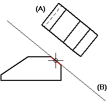
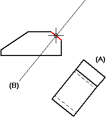

Auxiliary View command
The Auxiliary View command  creates a new part view (A) that shows the part rotated 90 degrees about a viewing plane line (B) on an existing part view. The view plane line can be parallel or perpendicular
to the geometry in the existing view.
creates a new part view (A) that shows the part rotated 90 degrees about a viewing plane line (B) on an existing part view. The view plane line can be parallel or perpendicular
to the geometry in the existing view.
You can use an auxiliary view to show geometry that cannot be dimensioned at any of the orientations shown in principal views or existing auxiliary views.


How do I
Create an auxiliary viewLearn more
Auxiliary viewsModifying auxiliary views and view planes
Look up more details
Auxiliary View command barViewing Plane Selection command bar
Viewing Plane Properties dialog box
General tab (Viewing Plane Properties dialog box)
Caption tab (Viewing Plane, Detail Envelope, Cutting Plane Properties dialog box)